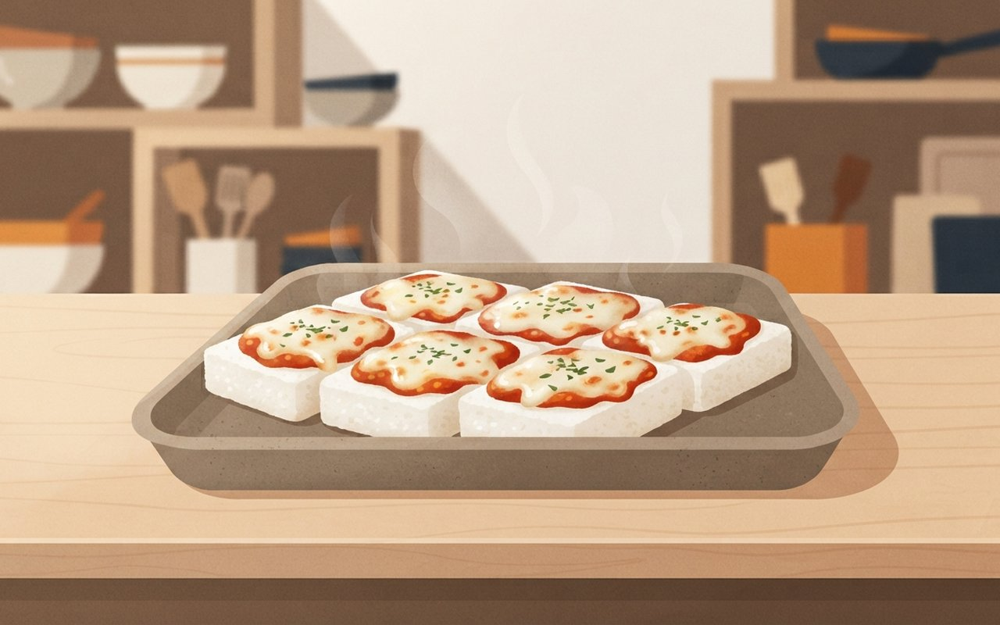
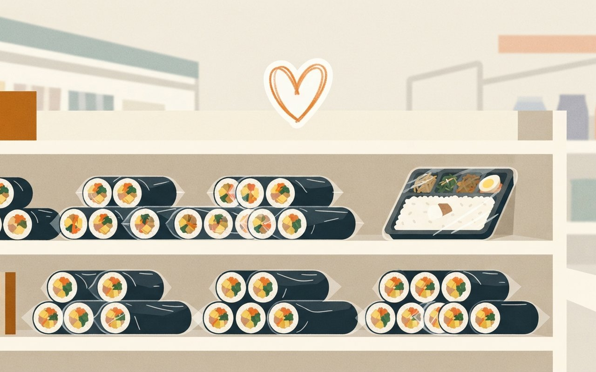
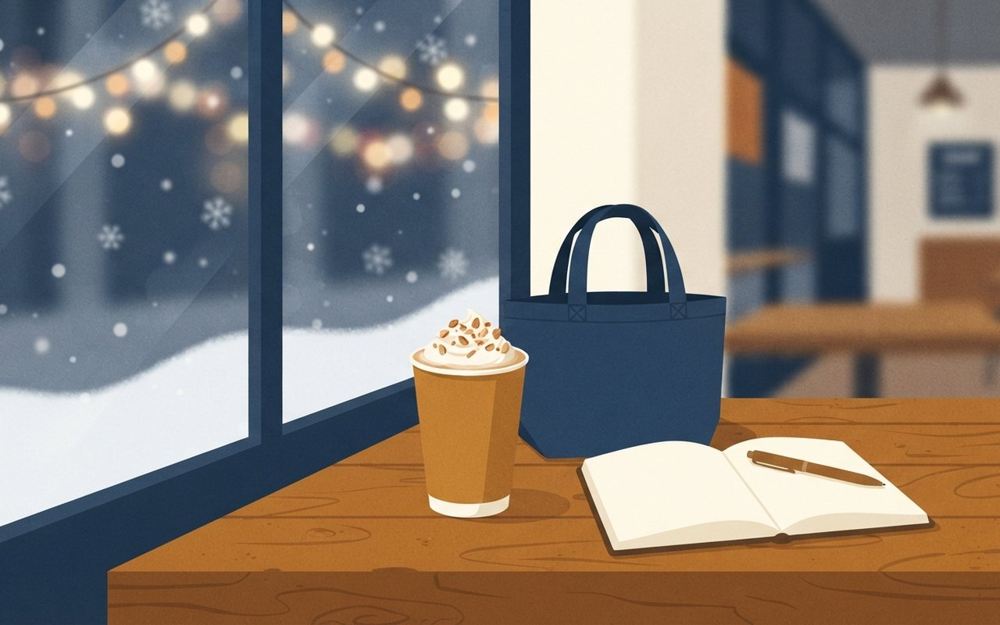
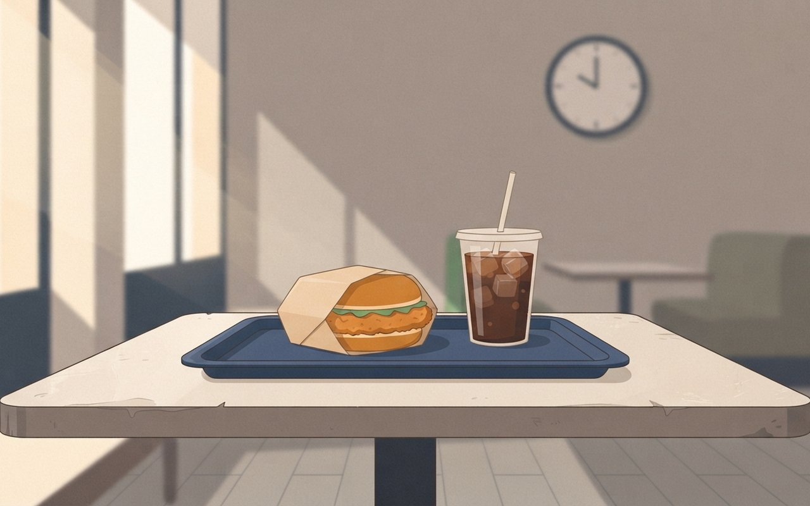

피자설기 하루 6,000개 · 김밥에 맛집 이름 · 군고구마 호빵의 3배 · 스타벅스 17잔
2026년 10월 29일 목요일 · 푸드 브리프6 Picks · 지금 뜨는 먹거리 3 · 신상·할인 3
떡 열풍이 동네 떡집에서 편의점으로 번졌습니다. 인천의 한 시장 떡집은 피자설기를 하루 최대 6,000개 팔고, GS25는 설빙과 만든 피자설기를 11월 5일 전국 점포에 내놓습니다. 편의점 김밥과 비빔밥에는 맛집·연예인 이름이 붙어 잘 팔리고, CU 군고구마는 호빵보다 3배 팔립니다. 스타벅스 겨울 e-프리퀀시는 17잔을 채워야 하고, 롯데리아는 11월 한 달 오후 2~6시 할인을 엽니다. 이번 호에는 방송 직후 웨이팅이 확인된 식당이 기사로 확인되지 않아 싣지 않았습니다.
🎧 듣기 · 약 2분
🎧 낭독 원고 보기
10월 29일 목요일, 푸드 브리프입니다.
인천 부평종합시장의 한 떡집은 피자설기를 하루 최대 6,000개 팝니다. 출시 두 달 만에 하루 200개에서 30배로 늘었습니다. GS25도 설빙과 만든 냉동 피자설기를 11월 5일 전국 점포에 냅니다. 5,000개 한정 사전 예약은 이달 말까지 우리동네GS 앱에서 받습니다. 서울 중랑구 면목시장 떡집들은 주말 하루 최대 2,000개를 팔고, 전통시장 떡집 가격은 개당 2,000원입니다.
편의점 김밥과 도시락에는 이름이 붙습니다. GS25가 식물원김밥과 만든 날치알묵은지김밥은 10만 개를 넘었고, 세븐일레븐 성시경 비빔밥 시리즈는 9월 출시 이후 50만 개가 팔렸습니다. 모두 회사가 밝힌 숫자입니다.
CU에서는 지난해 군고구마 매출이 호빵의 약 3배였고, 올해 1월부터 9월까지는 44.5% 더 늘었습니다. 뉴스1 보도에 따르면 7월부터 9월만 보면 66.3% 늘었고, CU는 군고구마를 연중 판매합니다.
스타벅스 겨울 e-프리퀀시는 22일부터 12월 31일까지입니다. 음료 17잔을 사야 하고, 그중 3잔은 미션 음료입니다. 증정품은 스피커, 코듀로이 백팩, 캔버스 토트백, 몰스킨 2027 플래너이고, 같은 계정은 7일간 최대 5개까지 예약할 수 있습니다. 증정품이 소진되면 톨 무료 음료 쿠폰 3장으로 바뀔 수 있습니다.
뉴스1에 따르면 롯데리아는 11월 한 달 매일 오후 2시부터 6시까지 인기 메뉴 6종을 최대 38% 할인합니다. 아메리카노는 38%, 치킨버거는 18%입니다. 빼빼로데이는 11월 11일 수요일이고, 롯데웰푸드는 시즌 패키지 10종을 냈으며 GS25와 CU도 협업 상품을 준비하고 있습니다.
지금까지 푸드 브리프였습니다. 한정 수량과 행사 조건은 바뀔 수 있으니 구매 전 앱 안내를 확인해 주세요. 맛있는 하루 보내세요.
지금 뜨는 먹거리
餠
피자설기
피자설기, 떡집 하루 6,000개에서 편의점까지 — GS25 설빙 피자설기 11월 5일 전국 판매, 사전예약 5,000개는 이달 말까지
인천 부평종합시장의 한 떡집은 피자설기를 낸 지 두 달 만에 하루 판매량이 200개에서 최대 6,000개로 30배 늘었다. 서울 중랑구 면목시장 떡집들은 주말 하루 최대 2,000개를 판다. 전통시장 떡집 가격은 개당 2,000원이다(서울경제).
GS25는 10월 26일 설빙과 만든 냉동 '설빙 피자설기'를 내놨다. 전자레인지에 데워 먹는 상품이고, 이달 말까지 '우리동네GS' 앱에서 5,000개 한정 사전 예약을 받은 뒤 11월 5일부터 전국 점포에서 판다(서울경제·파이낸셜뉴스). 가격은 기사에 나오지 않았다.
인천 부평피자설기 출시 두 달 만에 하루 200개 → 최대 6,000개 (떡집 상호 미기재)
서울 면목시장주말 하루 최대 2,000개 · 전통시장 떡집 개당 2,000원
GS25설빙 피자설기(냉동) · 10월 26일 출시 · 우리동네GS 앱 5,000개 사전 예약 ~10월 말(31일) · 11월 5일 전국 판매 ⚠ 가격 미공개
팝업창억떡 더현대 서울 팝업 일주일 약 1만 명 · 롯데백화점 잠실점 '떡지순례' 2만 명 이상 구매
🍜 알고 보면 달라지는 것
동네 떡집에서 먼저 뜬 메뉴가 두 달 사이 편의점 신상으로 올라왔다. 이번 주 안에 사 보려면 사전 예약이 앱에서 이달 말까지라 5,000개 한정이 먼저 끝날 수 있고, 11월 5일 이후 전국 점포 판매는 점포마다 재고가 다를 수 있다. 전통시장 떡집은 개당 2,000원이라 가격을 비교해 볼 만하다.
서울경제 — 떡집 판매량·GS25 출시파이낸셜뉴스 — 사전 예약 일정하루 200→6,000개·면목시장 2,000개·개당 2,000원·팝업 방문자는 서울경제(10/26) 단일 · 설빙 피자설기 5,000개·11월 5일 전국 판매는 서울경제·파이낸셜뉴스(10/27 영문판) 일치 · 사전 예약 시작일은 파이낸셜뉴스 10월 27일, 서울경제는 "이달 말까지"만 적음 · 가격 기사에 없음 (확인 2026-10-29)
피자설기, 떡집 6,000개 GS25는 11월 5일
인천 떡집은 피자설기를 하루 최대 6,000개 팔아요. GS25 설빙 피자설기는 이달 말까지 5,000개 사전예약, 11월 5일 전국 판매예요.
~10/31
우리동네GS 앱 · 11/5 전국 판매
A tray of square white Korean rice cake slices topped with melted mozzarella cheese and red tomato sauce, fresh from a small neighborhood rice cake shop counter, steam rising, warm morning light, wooden shelves in the soft background, no people, no text, no logos, no brand packaging

飯
맛집 협업
편의점 김밥·비빔밥에 맛집·연예인 이름 — GS25 날치알묵은지김밥 10만 개, 세븐일레븐 '시경 픽' 비빔밥 시리즈 50만 개
GS25는 유명 연예인이 소개해 화제를 모은 식물원김밥과 만든 김밥 두 종을 10월에 냈다. '명란통계란김밥'은 사전 예약 500개가 10분 만에 팔렸고, '날치알묵은지김밥'은 누적 10만 개를 넘었다(회사 집계, 파이낸셜뉴스·헤럴드경제). 김밥 매출은 10월 1~18일 전년 대비 37.6% 늘었다(파이낸셜뉴스).
세븐일레븐은 가수 성시경과 만든 '시경 픽 비빔밥 시리즈'를 9월 2일 내놨고 누적 50만 개를 넘겼다. 새 제품 '시경 픽 꿀배추제육비빔밥'이 나올 예정이지만 출시일은 기사에 없다(파이낸셜뉴스).
GS25식물원김밥 협업 · 명란통계란김밥 사전 예약 500개 10분 완판 · 날치알묵은지김밥 누적 10만 개 (회사 집계)
김밥 매출GS25 10월 1~18일 전년 대비 +37.6% (1~15일 기준으로는 +36.2%, 헤럴드경제·SBS Biz)
세븐일레븐시경 픽 비빔밥 시리즈 9월 2일 출시 · 누적 50만 개 (회사 집계)
출시 예정시경 픽 꿀배추제육비빔밥 ⚠ 출시일·가격 미공개
🍜 알고 보면 달라지는 것
여기 숫자는 모두 회사가 밝힌 누적 판매량이라 기간이 제각각이고, 두 회사를 직접 견줄 수는 없다. 김밥 매출 증가율은 집계 기간을 바꿔도 36~38%대로 비슷하다. 다만 기사들은 이 증가를 협업 상품 덕이라고 설명하지 않았고, 협업 상품의 매출 비중도 밝히지 않았다. 맛은 먹어 보기 전엔 알 수 없어, 판매량을 맛의 증거로 읽지는 않는 게 좋다.
파이낸셜뉴스 — 협업 간편식 판매량헤럴드경제 — 사전 예약·김밥 매출SBS Biz — 김밥 매출 36.2%날치알묵은지김밥 10만 개·명란통계란김밥 사전예약 500개 10분은 헤럴드경제(10/16)와 파이낸셜뉴스(10/20)가 일치 — 단 "일주일 만에 10만"의 출시일은 두 기사가 어긋나 기간은 싣지 않음 · 시경 픽 50만 개·꿀배추제육비빔밥은 파이낸셜뉴스(10/20) 단일 · 가격(3,900·3,700원)은 SBS Biz 단일이라 싣지 않음 · 판매량은 모두 회사 발표 (확인 2026-10-29)
편의점 김밥·비빔밥, 이름 붙으면 50만 개
세븐일레븐 시경 픽 비빔밥 시리즈는 9월 출시 뒤 50만 개를 넘었어요. GS25 날치알묵은지김밥은 10만 개를 넘었고, 모두 회사 집계예요.
시경 픽 비빔밥:50|날치알묵은지김밥:10
37.6%|GS25 김밥 매출 10/1~18
Rows of neatly wrapped kimbap rolls and a rice bowl lunch box sitting on a bright convenience store shelf, a hand-drawn style heart sticker motif in the air, pastel colors, clean modern lighting, no people, no text, no logos, no price tags, no brand packaging

薯
군고구마
CU 겨울 간식, 군고구마가 호빵보다 3배 — 올해 1~9월 44.5%↑
CU의 지난해 군고구마 매출은 호빵의 약 3배였다. 뉴스1 보도에 따르면 군고구마는 2020년 호빵 매출을 넘어선 뒤 격차가 벌어졌다(BGF리테일 집계).
올해 1~9월 군고구마 매출은 전년 동기보다 44.5% 늘었고, 7~9월만 보면 66.3% 늘었다. CU는 군고구마를 겨울에만 팔지 않고 연중 판매한다. 판매 점포 수와 가격은 기사에 나오지 않았다.
지난해CU 군고구마 매출 = 호빵의 약 3배 (2020년 호빵 추월 뒤 격차 확대)
올해 1~9월군고구마 매출 전년 동기 대비 +44.5%
7~9월전년 동기 대비 +66.3% · 여름·초가을에도 판매 (연중 운영)
연중 판매CU는 겨울에만 팔지 않는 전략 ⚠ 점포별 운영 다를 수 있음
🍜 알고 보면 달라지는 것
3배는 CU 한 회사의 지난해 매출 비교이고, 다른 편의점이나 노점·마트까지 포함한 순위는 아니다. 증가율도 매출액이 아니라 전년 대비 비율이라 얼마나 팔렸는지는 알 수 없다. 겨울 간식 경쟁에서 호빵보다 군고구마가 앞선다는 흐름은 CU 기준으로는 분명하다.
뉴스1 — CU 군고구마 매출3배·44.5%·66.3%·2020년 추월은 뉴스1(10/29 08:19) 단일, 회사(BGF리테일) 집계 · 10/22 브리프의 편의점 겨울 간식 카드(어묵·호빵 증가율)와 숫자가 겹치지 않음 (확인 2026-10-29)
A warm roasted sweet potato split open with steam rising, held in a paper bag on a small convenience store counter next to a steamed bun warmer, cold blue evening outside the fogged window, no people, no text, no logos, no brand packaging
스타벅스 '2026 겨울 e-프리퀀시'는 10월 22일부터 12월 31일까지다. 제조 음료 17잔(미션 음료 3잔 포함)을 사 e-스티커 17개를 모으면 증정품을 예약할 수 있다. 미션 음료는 크리스마스 시즌 프로모션과 함께 나중에 공개된다(이데일리).
증정품은 렉슨 협업 포터블 스피커 '미노 티', 코듀로이 백팩, 캔버스 토트백, 몰스킨 협업 2027 플래너다. 모두 한정 수량이고, 같은 계정은 7일간 최대 5개까지 예약할 수 있다. 10월 22일에는 토피 넛 라떼, 윈터 스카치 바닐라 라떼 등 겨울 음료도 나왔다(파이낸셜뉴스·서울경제).
증정품미노 티 스피커(2색) · 코듀로이 백팩(2색) · 캔버스 토트백 · 몰스킨 2027 플래너 — 한정 수량, 소진 시 톨 무료 음료 쿠폰 3장으로 대체될 수 있음
겨울 음료토피 넛 라떼 · 윈터 스카치 바닐라 라떼 · 클래식 뱅쇼 히비스커스 티(파이낸셜뉴스 영문판: 알코올 없음) 등 ⚠ 가격은 기사에 없음
🍜 알고 보면 달라지는 것
17잔 가운데 3잔은 미션 음료라, 공개되기 전에는 어떤 음료인지 알 수 없다. 12월 31일까지 두 달 남짓이라 17잔을 채우려면 일주일에 두 잔쯤 마셔야 한다. 증정품은 한정 수량이고 소진되면 쿠폰으로 바뀔 수 있으니 갖고 싶은 증정품이 있다면 예약 가능 여부를 앱에서 확인하는 편이 낫다.
스타벅스 겨울 e-프리퀀시는 10월 22일부터 12월 31일까지예요. 음료 17잔(미션 3잔 포함)을 채우면 스피커, 백팩, 플래너를 예약할 수 있어요.
~12/31
3잔|17잔 중 미션 음료
A cozy winter cafe table with a warm paper cup of latte topped with whipped cream and a sprinkle of toasted nuts, a small tote bag and a notebook planner beside it, soft Christmas string lights glowing behind, snowy window, no people, no text, no logos, no brand packaging

割
스낵 타임
롯데리아 11월 '리아 스낵 타임' — 매일 오후 2~6시 인기 메뉴 6종 최대 38% 할인
롯데리아가 11월 1일부터 30일까지 매일 오후 2시부터 6시까지 인기 메뉴 6종을 최대 38% 할인하는 '리아 스낵 타임'을 연다. 아메리카노는 38%, 치킨버거는 18% 할인된다(뉴스1).
나머지 4종의 메뉴와 할인율, 할인가, 매장·앱·배달 중 어디서 적용되는지는 기사에 나오지 않았다. 시간대가 오후 2~6시로 정해져 있어 점심·저녁 사이에만 받을 수 있다.
기간2026년 11월 1일 ~ 11월 30일 (일요일부터)
시간매일 오후 2시 ~ 6시(4시간)
할인인기 메뉴 6종 최대 38% · 아메리카노 38% · 치킨버거 18%
확인 필요나머지 4종 · 가격 · 적용 채널 ⚠ 방문 전 롯데리아 앱·매장 안내 확인
🍜 알고 보면 달라지는 것
최대 38%는 아메리카노 기준이고 치킨버거는 18%라, 메뉴마다 할인 폭이 두 배 넘게 다르다. 오후 2시 전이나 6시 이후에 가면 할인이 없으니 점심을 늦게 먹거나 간식을 먹는 시간에 맞춰야 한다. 6종이 어떤 메뉴인지는 이 기사에 없어 앱에서 확인해야 한다.
뉴스1 — 리아 스낵 타임기간·시간대·최대 38%·아메리카노 38%·치킨버거 18%는 뉴스1(10/27 08:37) 단일 — 다른 매체에서 확인하지 못해 단일 출처로 표기, 4종 메뉴·가격·적용 채널은 기사에 없음 (확인 2026-10-29)
롯데리아 11월 오후 2~6시 최대 38%
롯데리아 리아 스낵 타임은 11월 1~30일 매일 오후 2~6시예요. 아메리카노는 38%, 치킨버거는 18% 할인되고 인기 메뉴 6종이 대상이에요.
11/1~11/30
4시간|매일 오후 2~6시
A tray on a fast food restaurant table in the afternoon light, holding a crispy chicken burger in paper wrapping and an iced americano in a clear cup, a plain wall clock softly blurred in the background, no people, no text, no logos, no brand packaging

菓
빼빼로데이
빼빼로데이는 11월 11일 수요일 — 롯데웰푸드 시즌 패키지 10종, GS25는 '무무씨'·CU는 포켓몬 협업
올해 빼빼로데이(11월 11일)는 수요일이다. 롯데웰푸드는 스트레이 키즈, 산리오캐릭터즈, 가나디 같은 캐릭터를 입힌 시즌 패키지 10종을 냈다(아주경제).
GS25는 자체 캐릭터 '무무씨' 협업 상품과 한정판 굿즈를, CU는 포켓몬·다마고치를 활용한 키링·담요·핫팩 같은 선물용 상품을 준비 중이다. GS25는 빼빼로데이가 평일이던 2024년과 지난해 관련 상품 매출이 전년보다 각각 39.2%, 30.5% 늘었다고 밝혔다.
두 번 연속 평일이었던 빼빼로데이에 GS25 관련 매출이 30~39% 늘었다는 설명이어서, 기사에는 올해 준비 물량과 상품 가격, 정확한 판매 시작일이 없어, 선물할 거라면 11월 초에 각 편의점 앱에서 먼저 확인해 보는 게 좋다.
아주경제 — 빼빼로데이·연말 대목11월 11일 수요일·시즌 패키지 10종·GS25 39.2%/30.5%는 아주경제(10/27 16:30) 단일 — 롯데웰푸드 패키지는 같은 사 보도라 단일 출처로 표기, 가격·판매 시작일은 기사에 없음 (확인 2026-10-29)
올해 빼빼로데이는 11월 11일 수요일
올해 빼빼로데이는 11월 11일 수요일이에요. 롯데웰푸드가 시즌 패키지 10종을 냈고 GS25와 CU도 협업 상품을 준비하고 있어요.
11/11
10종|롯데웰푸드 시즌 패키지
A pile of slim chocolate-coated biscuit sticks tied with ribbons in pastel gift boxes on a convenience store shelf, a small calendar page showing the number eleven, cheerful pink and yellow colors, no people, no text, no logos, no brand packaging, no characters